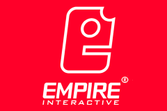

Starsky & Hutch (USA)
EEPROM 4K
Cartridge Identity
- Game Code
AYHE(FamilyAYH)- Header Title
STARSKYHUTCH- Maker / Revision
7N/ rev0- ROM Size
- 4.0 MiB (4,194,304 B)
- Save Media
EEPROM 4K- SHA-256
751657d72c8c747c7f5d514e9de18c17add4ba941c8e227417e3f077396a2167
Screenshots

Hardware MMIO Subsystems
irq_control0x8000578,0x8001208,0x8026a84,0x80276c8keyinput0x8006488ppu_display0x8000578,0x8001208
Regional Variants & Revisions (Family AYH)
- Starsky & Hutch (Europe) (En,Fr,De,Es,It) (
AYHP, 4 MiB) - Starsky & Hutch (USA) (Beta) (2003-02-11) (
AYHE, 4 MiB)